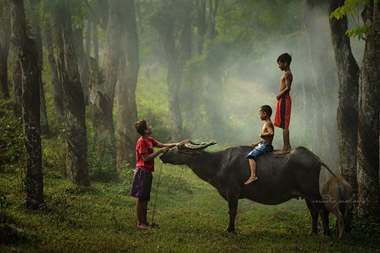
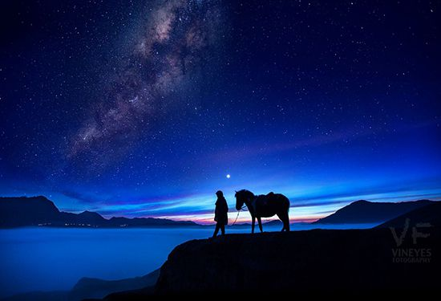
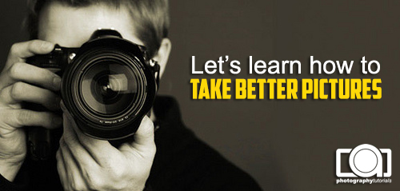
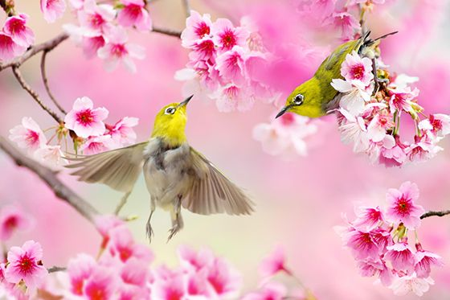

advertisement here

★ FAVORITE GALLERY
|  |  | ||
| Koleksi Foto Menakjubkan Dengan Lensa 50mm | Koleksi Foto Dramatis Karya Rarindra Prakarsa | Koleksi Foto Gunung Bromo Yang Menakjubkan | Koleksi Foto Fantastis Borobudur |
|
WHAT'S UP!
Memahami Konsep Exposure Seringkali setelah membeli kamera digital baik slr maupun point & shoot, kita terpaku pada mode auto untuk waktu yang cukup lama. Mode auto memang paling mudah dan cepat, namun tidak memberikan kepuasan kreatifitas.
 Koleksi Foto Bokeh Bokeh, adalah karakteristik blur yang dihasilkan saat kita memotret dengan bukaan aperture yang besar.
Memahami Konsep ISO Secara definisi ISO adalah ukuran tingkat sensifitas sensor kamera terhadap cahaya. Semakin tinggi setting ISO kita maka semakin sensitif sensor terhada cahaya.
|
|
|
|


 Copyright © Photography Tutorials. |